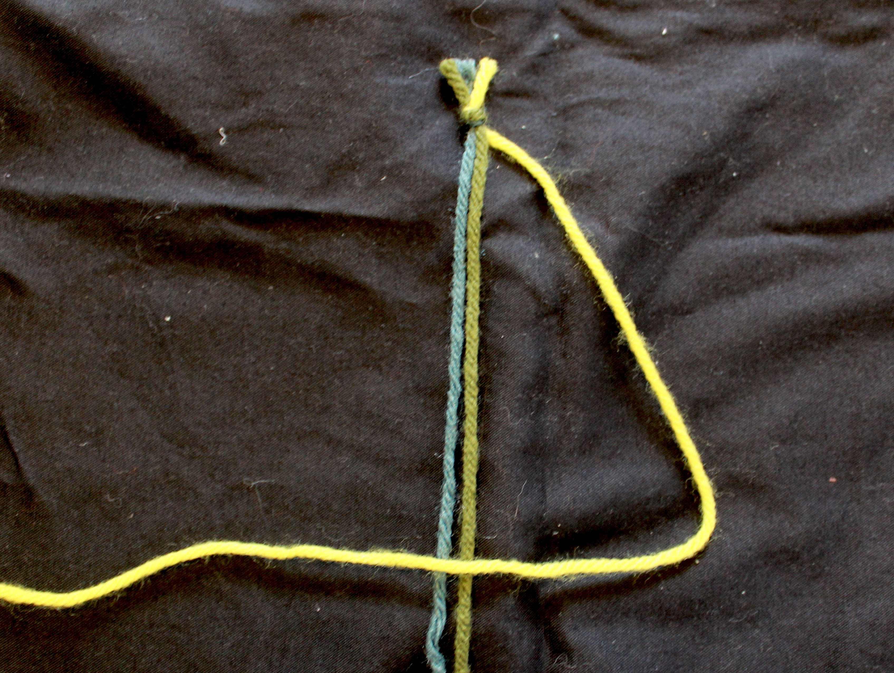
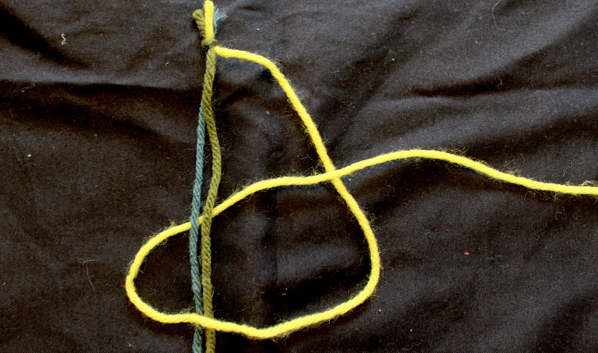
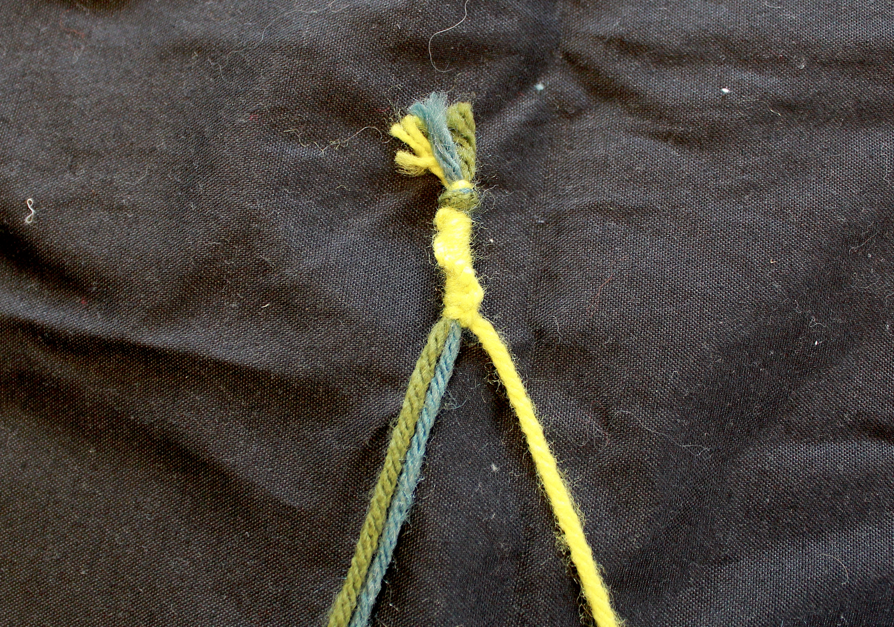
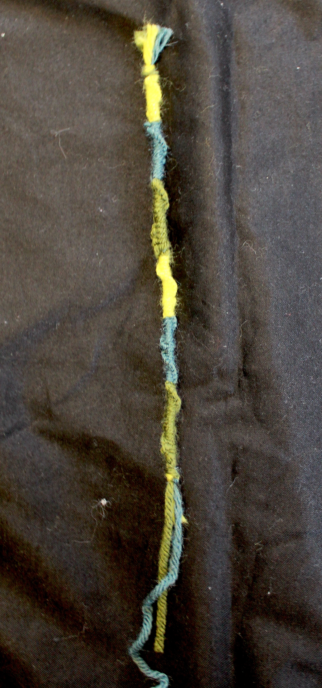

Learn How To:
Make a Bracelet
Step 1:

- tie a knot at the top of your string
- you can use two or more pieces of string
- the more string you use the thicker it will be
- choose which color you want to start with and bring it to the right
Step 2:

- bring the string on the right over the top of the other string
- hold the string a little below the top to make a corner
- this should look like a backwards "4"
Step 3:

- reach under the other string and pull the first color string through
- it will look like a not about to be tied
Step 4:

- repeat this process until you like the length of the first color
- you can do one loop, or as many as you would like
- now you will pick out your next color
- you will repeat the above steps
- you can switch to another color whenever you want
Step 6:

- continue these steps until you are happy with the length!
- once you are finished, you tie a knot with the remaining string
- try to tie the knot as close to the end of your bacelet as possible
- now you can use the remaining string to tie it on your wrist, or leav it and make it a keychain!